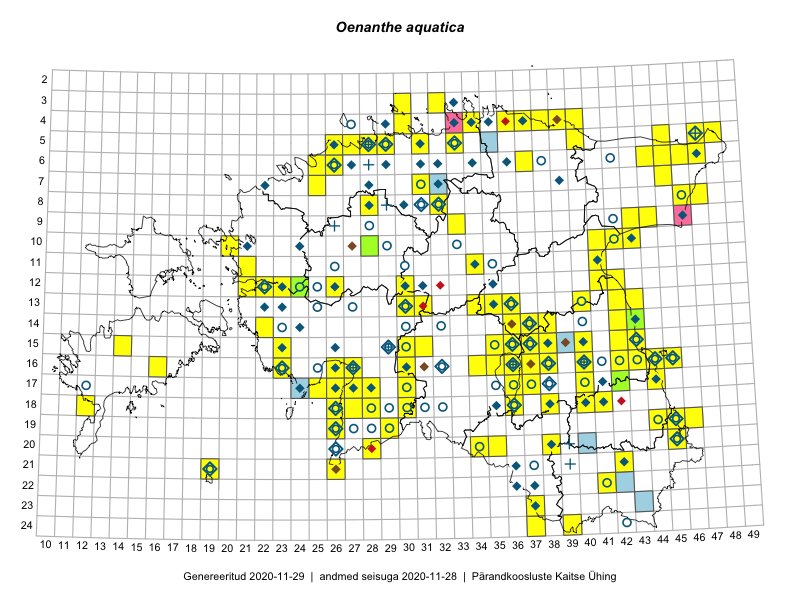

Oenanthe aquatica — harilik vesiputk
Kaardile koondatud taksonid: Oenanthe aquatica (L.) Poir. (163)

Kaart põhineb 163 kirjel, neist:
vaatlusi 158
eksemplare 5
Kaasaegsed1 leiukohad asuvad 116 ruudus.
Andmed “Eesti taimede levikuatlasest”,2 sulgudes ruutude arv:3
● 1971–2005 (81)
○ 1921–1970 (33)
△ kuni 1920 (0)
+ hävinud (0)
? kaheldav (0)
Lisaruudud teistest andmebaasidest:4
ELF: 2006– . . . (9)
PKÜ: 2006– . . . (2)
ELF: 1971–2005 (3)
PKÜ: 1997–2005 (6)
| Ruut | Vaatleja(d) | Vaatlusaeg | Kirje PlutoFis |
|---|---|---|---|
| 19-29 | Peedu Saar, Liina Oja | 2015-05-22 | ruut/ala: Oenanthe aquatica (L.) Poir. |
| 16-40 | Thea Kull | 2015-07-07 | ruut/ala: Oenanthe aquatica (L.) Poir. |
| 18-26 | Peedu Saar, Liina Oja | 2015-05-20 | ruut/ala: Oenanthe aquatica (L.) Poir. |
| 03-32 | Rein Kalamees, Kersti Püssa | 2015-09-06 | ruut/ala: Oenanthe aquatica (L.) Poir. |
| 05-45 | Tiit Hallikma, Toomas Kukk | 2015-07-21 | ruut/ala: Oenanthe aquatica (L.) Poir. |
| 03-30 | Ott Luuk, Peedu Saar | 2015-09-03 | ruut/ala: Oenanthe aquatica (L.) Poir. |
| 14-42 | Peedu Saar, Ott Luuk | 2015-06-21 | ruut/ala: Oenanthe aquatica (L.) Poir. |
| 15-38 | Peedu Saar | 2015-07-14 | ruut/ala: Oenanthe aquatica (L.) Poir. |
| 17-27 | Peedu Saar, Liina Oja | 2015-06-09 | ruut/ala: Oenanthe aquatica (L.) Poir. |
| 16-45 | Toomas Kukk, Eerik Leibak | 2015-07-29 | ruut/ala: Oenanthe aquatica (L.) Poir. |
| 06-44 | Peedu Saar, Liina Oja | 2015-07-21 | ruut/ala: Oenanthe aquatica (L.) Poir. |
| 16-44 | Toomas Kukk, Eerik Leibak | 2015-07-29 | ruut/ala: Oenanthe aquatica (L.) Poir. |
| 15-30 | Tiit Hallikma, Toomas Kukk | 2015-06-10 | ruut/ala: Oenanthe aquatica (L.) Poir. |
| 14-36 | Peedu Saar | 2015-08-04 | ruut/ala: Oenanthe aquatica (L.) Poir. |
| 16-42 | Thea Kull, Eerik Leibak | 2015-07-05 | ruut/ala: Oenanthe aquatica (L.) Poir. |
| 05-47 | Tiit Hallikma, Toomas Kukk | 2015-07-22 | ruut/ala: Oenanthe aquatica (L.) Poir. |
| 11-41 | Peedu Saar | 2015-08-22 | ruut/ala: Oenanthe aquatica (L.) Poir. |
| 09-44 | Ott Luuk, Hannes Pehlak | 2015-07-24 | ruut/ala: Oenanthe aquatica (L.) Poir. |
| 07-45 | Ott Luuk, Hannes Pehlak | 2015-07-22 | ruut/ala: Oenanthe aquatica (L.) Poir. |
| 13-42 | Katrit Karus, Tõnu Feldmann | 2015-07-29 | ruut/ala: Oenanthe aquatica (L.) Poir. |
| 13-35 | Katrit Karus, Tõnu Feldmann | 2015-08-05 | ruut/ala: Oenanthe aquatica (L.) Poir. |
| 05-31 | Katrit Karus, Tõnu Feldmann | 2015-08-04 | ruut/ala: Oenanthe aquatica (L.) Poir. |
| 20-35 | Ott Luuk, Hannes Pehlak | 2015-06-12 | ruut/ala: Oenanthe aquatica (L.) Poir. |
| 18-38 | Toomas Kukk, Peedu Saar, Mall Värva, Sander Laherand | 2014-07-27 | ruut/ala: Oenanthe aquatica (L.) Poir. |
| 19-45 | Toomas Kukk, Timo Luhamäe, Kersti Tambets, Sten Mander, Janika Sammasto | 2014-07-29 | ruut/ala: Oenanthe aquatica (L.) Poir. |
| 17-30 | Ott Luuk, Hannes Pehlak | 2015-06-11 | ruut/ala: Oenanthe aquatica (L.) Poir. |
| 16-38 | Thea Kull, Eerik Leibak | 2015-07-03 | ruut/ala: Oenanthe aquatica (L.) Poir. |
| 14-43 | Thea Kull, Eerik Leibak | 2015-07-06 | ruut/ala: Oenanthe aquatica (L.) Poir. |
| 15-43 | Thea Kull, Eerik Leibak | 2015-07-06 | ruut/ala: Oenanthe aquatica (L.) Poir. |
| 19-44 | Toomas Kukk | 2014-07-09 | ruut/ala: Oenanthe aquatica (L.) Poir. |
| 06-45 | Thea Kull, Eerik Leibak | 2015-07-20 | ruut/ala: Oenanthe aquatica (L.) Poir. |
| 08-46 | Thea Kull, Eerik Leibak | 2015-07-23 | ruut/ala: Oenanthe aquatica (L.) Poir. |
| 15-23 | Indrek Tammekänd | 2015-04-06 | ruut/ala: Oenanthe aquatica (L.) Poir. |
| 16-42 | Peedu Saar | 2015-06-05 | ruut/ala: Oenanthe aquatica (L.) Poir. |
| 19-45 | Thea Kull, Meeli Mesipuu | 2015-08-19 | ruut/ala: Oenanthe aquatica (L.) Poir. |
| 21-26 | Ott Luuk, Eerik Leibak, Liisa Rennel | 2015-05-20 | ruut/ala: Oenanthe aquatica (L.) Poir. |
| 05-27 | Erkki Otsman, Sergei Smirnov | 2015-07-08 | ruut/ala: Oenanthe aquatica (L.) Poir. |
| 05-29 | Erkki Otsman, Sergei Smirnov | 2015-07-12 | ruut/ala: Oenanthe aquatica (L.) Poir. |
| 10-41 | Kai Rünk, Ülle Jõgar, Illi Tarmu | 2015-07-29 | ruut/ala: Oenanthe aquatica (L.) Poir. |
| 16-26 | Indrek Tammekänd | 2015-05-11 | ruut/ala: Oenanthe aquatica (L.) Poir. |
| 13-42 | Karin Kikas, Elle Rajandu | 2015-05-19 | ruut/ala: Oenanthe aquatica (L.) Poir. |
| 14-43 | Karin Kikas, Elle Rajandu | 2015-05-18 | ruut/ala: Oenanthe aquatica (L.) Poir. |
| 16-30 | Mari Metsoja, Jaak-Albert Metsoja | 2015-06-09 | ruut/ala: Oenanthe aquatica (L.) Poir. |
| 16-27 | Meeli Mesipuu | 2015-06-17 | ruut/ala: Oenanthe aquatica (L.) Poir. |
| 18-28 | Meeli Mesipuu, Timo Luhamäe | 2015-06-09 | ruut/ala: Oenanthe aquatica (L.) Poir. |
| 16-40 | Kadi Palmik, Helle Mäemets | 2015-07-22 | ruut/ala: Oenanthe aquatica (L.) Poir. |
| 19-46 | Meeli Mesipuu, Thea Kull | 2015-08-19 | ruut/ala: Oenanthe aquatica (L.) Poir. |
| 13-43 | Meeli Mesipuu, Thea Kull | 2014-08-14 | ruut/ala: Oenanthe aquatica (L.) Poir. |
| 13-42 | Meeli Mesipuu, Thea Kull | 2015-08-14 | ruut/ala: Oenanthe aquatica (L.) Poir. |
| 16-16 | Sirje Azarov, Aira Alasi | 2015-08-12 | ruut/ala: Oenanthe aquatica (L.) Poir. |
| 06-47 | Mari Metsoja, Jaak-Albert Metsoja | 2015-07-22 | ruut/ala: Oenanthe aquatica (L.) Poir. |
| 06-26 | Mari Metsoja, Jaak-Albert Metsoja | 2015-07-29 | ruut/ala: Oenanthe aquatica (L.) Poir. |
| 16-37 | Helle Mäemets, Mare Leis | 2015-06-22 | ruut/ala: Oenanthe aquatica (L.) Poir. |
| 15-36 | Helle Mäemets, Mare Leis | 2015-07-06 | ruut/ala: Oenanthe aquatica (L.) Poir. |
| 04-39 | Kaili Orav, Silvia Pihu | 2015-06-19 | ruut/ala: Oenanthe aquatica (L.) Poir. |
| 04-40 | Kaili Orav, Silvia Pihu | 2015-07-21 | ruut/ala: Oenanthe aquatica (L.) Poir. |
| 03-30 | Mari Reitalu, Tõnu Ploompuu, Ott Luuk, Peedu Saar | 2014-06-01 | ruut/ala: Oenanthe aquatica (L.) Poir. |
| 11-21 | Hanna-Eliisa Luts, Tõnu Ploompuu | 2015-08-13 | ruut/ala: Oenanthe aquatica (L.) Poir. |
| 10-20 | Tõnu Ploompuu, Anna-Grete Rebane, Hanna-Eliisa Luts | 2015-07-20 | ruut/ala: Oenanthe aquatica (L.) Poir. |
| 15-43 | Thea Kull, Peedu Saar | 2016-05-05 | ruut/ala: Oenanthe aquatica (L.) Poir. |
| 12-26 | Tõnu Ploompuu | 2015-06-23 | ruut/ala: Oenanthe aquatica (L.) Poir. |
| 05-40 | Ott Luuk, Tiit Hallikma | 2016-05-20 | ruut/ala: Oenanthe aquatica (L.) Poir. |
| 21-26 | Thea Kull, Peedu Saar | 2016-06-07 | ruut/ala: Oenanthe aquatica (L.) Poir. |
| 16-40 | Kai Rünk, Ülle Jõgar, Illi Tarmu | 2016-06-14 | ruut/ala: Oenanthe aquatica (L.) Poir. |
| 16-43 | Rein Kalamees, Eerik Leibak | 2016-06-13 | ruut/ala: Oenanthe aquatica (L.) Poir. |
| 14-38 | Kai Rünk, Ülle Jõgar, Illi Tarmu | 2016-06-20 | ruut/ala: Oenanthe aquatica (L.) Poir. |
| 14-36 | Kai Rünk, Ülle Jõgar, Illi Tarmu | 2016-06-20 | ruut/ala: Oenanthe aquatica (L.) Poir. |
| 17-44 | Maret Gerz, Liina Oja | 2016-06-13 | ruut/ala: Oenanthe aquatica (L.) Poir. |
| 20-28 | Peedu Saar, Ott Luuk | 2016-06-09 | ruut/ala: Oenanthe aquatica (L.) Poir. |
| 14-22 | Mari Reitalu, Oliver Parrest | 2016-07-04 | ruut/ala: Oenanthe aquatica (L.) Poir. |
| 20-35 | Thea Kull, Eerik Leibak | 2016-07-18 | ruut/ala: Oenanthe aquatica (L.) Poir. |
| 20-34 | Thea Kull, Eerik Leibak | 2016-07-18 | ruut/ala: Oenanthe aquatica (L.) Poir. |
| 10-41 | Ott Luuk, Eerik Leibak | 2016-08-04 | ruut/ala: Oenanthe aquatica (L.) Poir. |
| 10-42 | Ott Luuk, Eerik Leibak | 2016-08-04 | ruut/ala: Oenanthe aquatica (L.) Poir. |
| 06-46 | Erkki Otsman, Sergei Smirnov | 2016-06-17 | ruut/ala: Oenanthe aquatica (L.) Poir. |
| 05-26 | Erkki Otsman, Sergei Smirnov | 2016-06-29 | ruut/ala: Oenanthe aquatica (L.) Poir. |
| 04-37 | Thea Kull, Eerik Leibak, Susanna Vain | 2016-07-26 | ruut/ala: Oenanthe aquatica (L.) Poir. |
| 16-26 | Aat Sarv, Maret Gerz | 2016-07-04 | ruut/ala: Oenanthe aquatica (L.) Poir. |
| 12-30 | Aat Sarv, Indrek Tammekänd | 2016-07-22 | ruut/ala: Oenanthe aquatica (L.) Poir. |
| 15-42 | Karin Kikas, Elle Rajandu | 2016-06-30 | ruut/ala: Oenanthe aquatica (L.) Poir. |
| 21-26 | Sirje Azarov, Indrek Tammekänd | 2016-07-18 | ruut/ala: Oenanthe aquatica (L.) Poir. |
| 21-19 | Meeli Mesipuu, Ott Luuk | 2016-09-10 | ruut/ala: Oenanthe aquatica (L.) Poir. |
| 15-30 | Sirje Azarov, Meeli Mesipuu | 2016-07-21 | ruut/ala: Oenanthe aquatica (L.) Poir. |
| 12-21 | Rein Kalamees, Liina Oja | 2016-07-08 | ruut/ala: Oenanthe aquatica (L.) Poir. |
| 12-22 | Mari Reitalu, Oliver Parrest | 2016-07-05 | ruut/ala: Oenanthe aquatica (L.) Poir. |
| 12-23 | Mari Reitalu, Oliver Parrest | 2016-07-05 | ruut/ala: Oenanthe aquatica (L.) Poir. |
| 09-43 | Rein Kalamees, Kersti Püssa | 2016-06-29 | ruut/ala: Oenanthe aquatica (L.) Poir. |
| 17-25 | Tiit Hallikma, Tõnu Ploompuu | 2016-07-06 | ruut/ala: Oenanthe aquatica (L.) Poir. |
| 13-30 | Tõnu Ploompuu, Hannes Pehlak, Marko Veinbergs | 2016-07-21 | ruut/ala: Oenanthe aquatica (L.) Poir. |
| 11-34 | Peedu Saar, Timo Luhamäe | 2016-07-21 | ruut/ala: Oenanthe aquatica (L.) Poir. |
| 09-33 | Ott Luuk, Eerik Leibak | 2016-07-25 | ruut/ala: Oenanthe aquatica (L.) Poir. |
| 13-35 | Ott Luuk, Hannes Pehlak | 2016-07-22 | ruut/ala: Oenanthe aquatica (L.) Poir. |
| 18-26 | Meeli Mesipuu, Timo Luhamäe | 2016-07-18 | ruut/ala: Oenanthe aquatica (L.) Poir. |
| 15-31 | Meeli Mesipuu, Sirje Azarov | 2016-07-21 | ruut/ala: Oenanthe aquatica (L.) Poir. |
| 18-26 | Ott Luuk, Peedu Saar | 2016-06-10 | ruut/ala: Oenanthe aquatica (L.) Poir. |
| 04-36 | Meeli Mesipuu, Liina Oja | 2016-07-26 | ruut/ala: Oenanthe aquatica (L.) Poir. |
| 12-23 | Meeli Mesipuu, Maret Gerz | 2015-08-24 | ruut/ala: Oenanthe aquatica (L.) Poir. |
| 10-43 | Hannes Pehlak, Ott Luuk | 2016-07-29 | ruut/ala: Oenanthe aquatica (L.) Poir. |
| 18-36 | Mari Metsoja, Peedu Saar | 2016-07-20 | ruut/ala: Oenanthe aquatica (L.) Poir. |
| 16-27 | Indrek Tammekänd | 2015-05-13 | ruut/ala: Oenanthe aquatica (L.) Poir. |
| 16-34 | Thea Kull, Ott Luuk | 2017-06-22 | ruut/ala: Oenanthe aquatica (L.) Poir. |
| 16-37 | Ott Luuk, Thea Kull | 2017-08-01 | ruut/ala: Oenanthe aquatica (L.) Poir. |
| 10-28 | Thea Kull, Ott Luuk | 2017-08-08 | ruut/ala: Oenanthe aquatica (L.) Poir. |
| 08-28 | Mari Reitalu, Eerik Leibak | 2017-08-08 | ruut/ala: Oenanthe aquatica (L.) Poir. |
| 14-36 | Meeli Mesipuu, Helen Toom | 2017-08-15 | ruut/ala: Oenanthe aquatica (L.) Poir. |
| 12-41 | Ott Luuk, Peedu Saar | 2017-08-23 | ruut/ala: Oenanthe aquatica (L.) Poir. |
| 14-37 | Meeli Mesipuu | 2017-08-14 | ruut/ala: Oenanthe aquatica (L.) Poir. |
| 14-37 | Indrek Tammekänd | 2017-08-17 | ruut/ala: Oenanthe aquatica (L.) Poir. |
| 17-28 | Indrek Tammekänd | 2017-07-18 | ruut/ala: Oenanthe aquatica (L.) Poir. |
| 17-26 | Toomas Kukk, Ott Luuk, Kersti Tambets, Timo Luhamäe, Sten Mander | 2017-08-30 | ruut/ala: Oenanthe aquatica (L.) Poir. |
| 17-26 | Indrek Tammekänd | 2016-07-25 | ruut/ala: Oenanthe aquatica (L.) Poir. |
| 06-37 | Katrit Karus, Tõnu Feldmann | 2017-07-07 | ruut/ala: Oenanthe aquatica (L.) Poir. |
| 06-45 | Tõnu Feldmann, Katrit Karus | 2017-07-06 | ruut/ala: Oenanthe aquatica (L.) Poir. |
| 14-43 | Peedu Saar, Ott Luuk | 2017-08-21 | ruut/ala: Oenanthe aquatica (L.) Poir. |
| 19-44 | Helle Mäemets, Kadi Palmik | 2017-08-02 | ruut/ala: Oenanthe aquatica (L.) Poir. |
| 05-26 | Peedu Saar, Timo Luhamäe | 2017-08-10 | ruut/ala: Oenanthe aquatica (L.) Poir. |
| 12-42 | Peedu Saar | 2017-07-24 | ruut/ala: Oenanthe aquatica (L.) Poir. |
| 18-26 | Indrek Tammekänd | 2015-07-28 | ruut/ala: Oenanthe aquatica (L.) Poir. |
| 18-27 | Indrek Tammekänd | 2015-07-19 | ruut/ala: Oenanthe aquatica (L.) Poir. |
| 17-27 | Indrek Tammekänd, Eike Vunk, Raivo Endrekson | 2015-06-10 | ruut/ala: Oenanthe aquatica (L.) Poir. |
| 18-40 | Helle Mäemets, Kadi Palmik | 2017-07-05 | ruut/ala: Oenanthe aquatica (L.) Poir. |
| 17-40 | Helle Mäemets, Kadi Palmik | 2017-07-05 | ruut/ala: Oenanthe aquatica (L.) Poir. |
| 16-23 | Indrek Tammekänd | 2017-09-17 | ruut/ala: Oenanthe aquatica (L.) Poir. |
| 16-36 | Ott Luuk, Thea Kull | 2017-06-21 | ruut/ala: Oenanthe aquatica (L.) Poir. |
| 15-35 | Ott Luuk, Peedu Saar | 2017-06-20 | ruut/ala: Oenanthe aquatica (L.) Poir. |
| 24-39 | Indrek Tammekänd | 2016-06-18 | ruut/ala: Oenanthe aquatica (L.) Poir. |
| 08-47 | Meeli Mesipuu, Timo Luhamäe | 2015-07-21 | ruut/ala: Oenanthe aquatica (L.) Poir. |
| 14-37 | Ulvi Selgis | 2015-08-19 | punkt: Oenanthe aquatica (L.) Poir. |
| 18-41 | Kadi Palmik, Helle Mäemets | 2015-08-13 | ruut/ala: Oenanthe aquatica (L.) Poir. |
| 17-36 | Helle Mäemets, Mare Leis, Malle Timm | 2015-06-25 | ruut/ala: Oenanthe aquatica (L.) Poir. |
| 18-28 | Meeli Mesipuu, Timo Luhamäe | 2015-06-09 | punkt: Oenanthe aquatica (L.) Poir. |
| 05-28 | Toomas Kukk, Peedu Saar | 2016-08-03 | ruut/ala: Oenanthe aquatica (L.) Poir. |
| 24-37 | Meeli Mesipuu | 2013-07-03 | punkt: Oenanthe aquatica (L.) Poir. |
| 15-37 | Helle Mäemets | 2015-07-05 | ruut/ala: Oenanthe aquatica (L.) Poir. |
| 16-36 | Helle Mäemets, Mare Leis, Jaak-Albert Metsoja | 2015-07-05 | ruut/ala: Oenanthe aquatica (L.) Poir. |
| 17-37 | Helle Mäemets | 2015-05-03 | ruut/ala: Oenanthe aquatica (L.) Poir. |
| 08-28 | Mari Reitalu, Sirje Azarov, Ester Valdvee | 2018-06-30 | ruut/ala: Oenanthe aquatica (L.) Poir. |
| 18-12 | Mari Reitalu, Sirje Azarov | 2018-08-23 | punkt: Oenanthe aquatica (L.) Poir. |
| 22-41 | Toomas Kukk, Indrek Tammekänd | 2019-07-11 | ruut/ala: Oenanthe aquatica (L.) Poir. |
| 18-30 | Ulvi Selgis | 2019-06-23 | ruut/ala: Oenanthe aquatica (L.) Poir. |
| 15-40 | Thea Kull | 2019-06-17 | ruut/ala: Oenanthe aquatica (L.) Poir. |
| 13-36 | Ott Luuk, Eerik Leibak | 2019-08-27 | ruut/ala: Oenanthe aquatica (L.) Poir. |
| 13-31 | Ott Luuk, Eerik Leibak | 2019-08-29 | ruut/ala: Oenanthe aquatica (L.) Poir. |
| 13-30 | Mari Reitalu, Thea Kull | 2019-08-28 | ruut/ala: Oenanthe aquatica (L.) Poir. |
| 20-45 | Ott Luuk, Peedu Saar | 2019-09-24 | punkt: Oenanthe aquatica (L.) Poir. |
| 06-45 | Thea Kull, Toomas Kukk | 2019-09-11 | punkt: Oenanthe aquatica (L.) Poir. |
| 16-35 | Meeli Mesipuu, Timo Luhamäe | 2019-08-27 | ruut/ala: Oenanthe aquatica (L.) Poir. |
| 16-30 | Peedu Saar, Martin Tikk, Toomas Kukk | 2019-08-28 | ruut/ala: Oenanthe aquatica (L.) Poir. |
| 05-31 | Peedu Saar, Timo Luhamäe | 2019-08-06 | ruut/ala: Oenanthe aquatica (L.) Poir. |
| 04-30 | Peedu Saar, Timo Luhamäe | 2019-08-06 | ruut/ala: Oenanthe aquatica (L.) Poir. |
| 07-31 | Peedu Saar, Timo Luhamäe | 2019-08-05 | ruut/ala: Oenanthe aquatica (L.) Poir. |
| 23-37 | Peedu Saar, Timo Luhamäe | 2019-07-11 | ruut/ala: Oenanthe aquatica (L.) Poir. |
| 15-40 | Peedu Saar, Ott Luuk | 2019-07-04 | punkt: Oenanthe aquatica (L.) Poir. |
| 03-32 | Ott Luuk, Jaak-Albert Metsoja | 2019-08-07 | ruut/ala: Oenanthe aquatica (L.) Poir. |
| 04-38 | Ott Luuk, Jaak-Albert Metsoja | 2019-08-06 | ruut/ala: Oenanthe aquatica (L.) Poir. |
| 04-39 | Ott Luuk, Jaak-Albert Metsoja | 2019-08-06 | ruut/ala: Oenanthe aquatica (L.) Poir. |
| 20-45 | Ott Luuk, Tiit Hallikma | 2019-07-10 | ruut/ala: Oenanthe aquatica (L.) Poir. |
| 04-36 | Anneli Palo | 2007 | punkt: Oenanthe aquatica (L.) Poir. |
| 17-42 | J.-M. Habicht | 2010-07-16 | TAM0020988: Oenanthe aquatica (L.) Poir. |
| 12-24 | Peedu Saar, Timo Luhamäe | 2017-08-09 | TAA0141079: Oenanthe aquatica (L.) Poir. |
| 10-28 | Ott Luuk, Thea Kull | 2017-08-08 | TAA0142780: Oenanthe aquatica (L.) Poir. |
| 10-28 | Ott Luuk, Thea Kull | 2017-08-08 | TAA0142781: Oenanthe aquatica (L.) Poir. |
| 14-43 | Helle Mäemets | 2007-07-27 | TAA2001875: Oenanthe aquatica (L.) Poir. |
Kaasaegsed leiukohad (tähistatud värvitud ruutudega) põhinevad peamiselt 2014–2019 välitööandmetel. Väiksemal määral on andmebaasi kantud vanemaid leiuandmeid aastatest 2006–2013.↩︎
Kukk, T., Kull, T., Eesti taimede levikuatlas. Eesti Maaülikool, Põllumajandus- ja Keskkonnainstituut, Tartu, 2005.↩︎
NB! 2005. aasta atlase andmestikus katavad uuemad leiud vanemaid. Näiteks kui liik on ruudus registreeritud 1971–2005, siis pole võimalik öelda, kas ta oli sellest ruudust teada ka enne 1970. aastat. Vana atlase andmetel hävinud ja kaheldavaid leiukohti pole hilisemate (taas)leidude põhjal korrigeeritud.↩︎
Eestimaa Looduse Fondi (ELF) ja Pärandkoosluste Kaitse Ühingu (PKÜ) andmebaasid sisaldavad inventeeritud koosluste kirjeldusi ja liigiloendeid. Neist andmekogudest on kaardile lisatud lisatud vaid need ruudud, millest uue atlase andmekogus taksoni kohta kirjeid veel pole. Kõrvale on jäetud teadaolevalt kaheldavad määrangud. Kaartidel katavad uuema perioodi andmed vanemaid, PKÜ omad ELFi omi. Kattumise tõttu võib kaardil näha olla vähem mingi kategooria ruute kui legendis olev arv näitab. ELFi ja PKÜ andmed ei kajastu hetkel vaatluste tabelis ega ruutude liigiloendites.↩︎